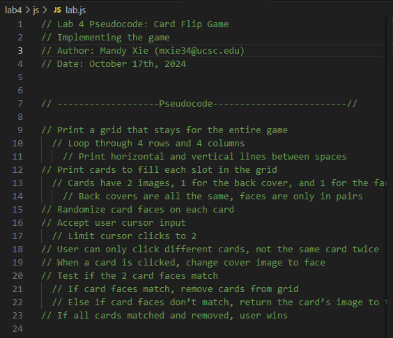
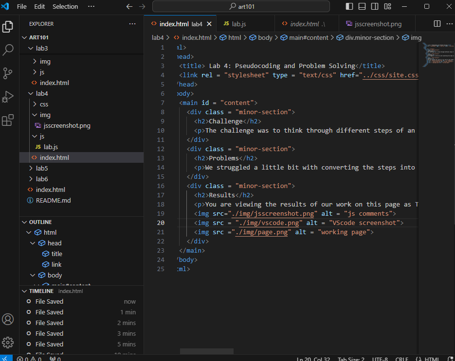
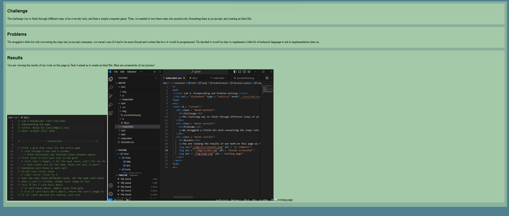

Challenge
The challenge was to think through different steps of an everyday task, and then a simple computer game. Then, we needed to turn these steps into pseudocode, formatting them as javascript, and creating an html file.
Problems
We struggled a little bit with converting the steps into javascript comments, we weren't sure if it had to be more formal and written like how it would be programmed. We decided it would be okay to implement a little bit of technical language to aid in implementation later on.
Results
You are viewing the results of our work on this page as Task 4 asked us to create an html file. Here are screenshots of our process!
  